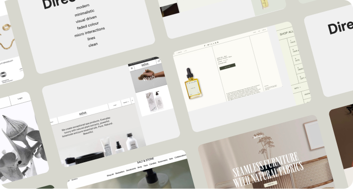
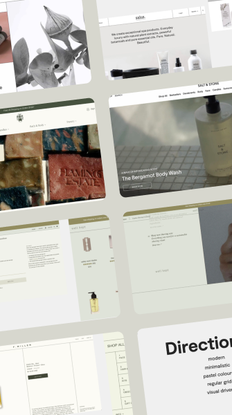
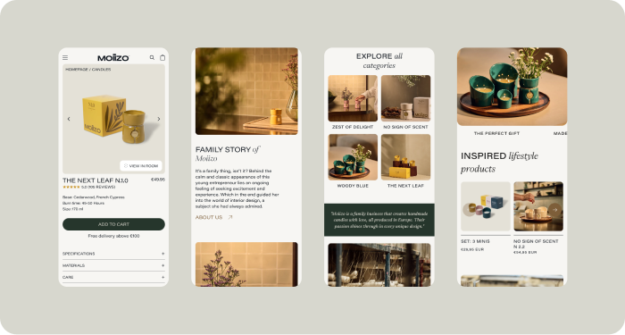
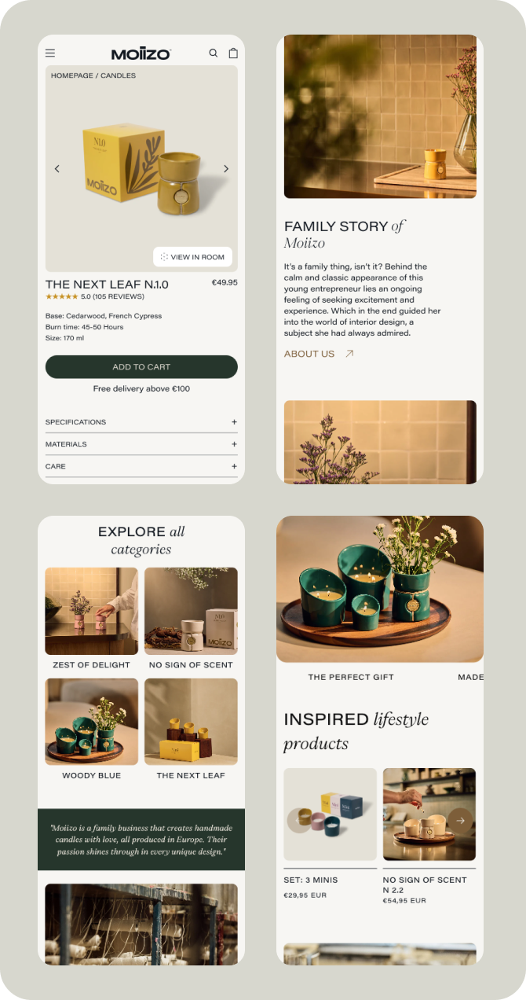
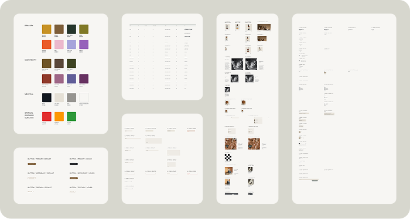
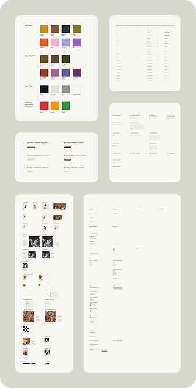

Moiizo
Challenge
Moiizo was a new lifestyle brand entering the market without a digital presence. The brand’s identity rooted in craftsmanship, family values, and mindful living, needed translation into a coherent online experience. The challenge was to design a digital foundation that would communicate Moiizo’s philosophy clearly, support scalable e-commerce growth, and position it credibly among established lifestyle brands.
- Establish a clear information architecture and content hierarchy for a new website
- Create an intuitive, emotionally resonant user experience reflecting Moiizo’s calm and authentic tone
- Develop a scalable design system that unifies brand storytelling and conversion goals

Research
As Moiizo was pre-launch with no existing analytics, the research phase focused on understanding the brand’s positioning and mapping a hypothetical customer journey to anticipate user expectations. This groundwork informed both IA and design direction before development.
Activities:
- Conducted stakeholder workshops to define core brand values, tone, and digital goals
- Analysed competitor brands (Rituals, Baobab, Diptyque) to evaluate navigation flow, visual hierarchy, and emotional storytelling techniques
- Created a customer journey and moodboard to translate findings into interaction principles and visual tone
Key Insights:
- Users connect emotionally with lifestyle brands that tell a story, not just sell a product
- Simplicity and mood-driven navigation feel more premium than product-heavy layouts
- Authentic storytelling could help Moiizo stand out against more commercial competitors
Define
The definition phase translated research insights into clear UX objectives. The aim was to express Moiizo’s values: calm, craftsmanship, and sincerity through structure, interaction, and tone.
UX Objectives:
- Clarify brand story through clear hierarchy and content flow
- Simplify navigation and product discovery
- Strengthen emotional connection through consistent tone and visuals
Target Users:
- Persona 1 (28 - 40 years old) - career-driven and design-aware, seeks calm, sustainable products that align with personal values and simplify daily life
- Persona 2 (40 - 60 years old) - established, quality-focused, values authenticity, craftsmanship, and sincerity over commercial luxury
Ideation
The ideation phase focused on transforming Moiizo’s brand philosophy into a clear and meaningful digital structure. This stage connected strategic insights with tangible design decisions, defining how users would explore the brand, discover products, and feel part of the Moiizo world.
Moodboard:
To define the visual tone, I created three moodboard directions, all grounded in the brandbook’s minimalistic identity. Each direction explored a different balance of Moiizo’s core values, from warm natural calm to refined modern simplicity. The goal was to ensure consistency with the existing brand language while exploring how minimalism could visually convey calmness, quality, and authenticity. The final direction was chosen for its clear reflection of refined simplicity and subtle emotional warmth, perfectly aligning with Moiizo’s lifestyle positioning.
 Sitemap:
The sitemap was developed from the earlier research and customer journey mapping, ensuring navigation reflected how users would intuitively explore Moiizo. It established a balanced structure between brand storytelling and commerce, allowing visitors to discover the brand’s philosophy and products in a natural, conversational flow.
Wireframes:
Based on the approved sitemap, I created low-fidelity wireframes to define content hierarchy, pacing, and user flow. The layouts emphasised clarity, generous whitespace, and calm rhythm, guiding users through an intuitive journey that felt premium and effortless.
Design:
The final design aimed to balance storytelling and commerce in one cohesive experience.
- The homepage introduces Moiizo’s philosophy alongside curated product highlights, creating an immediate emotional connection while encouraging exploration
- Navigation was structured around mood-based collections, enabling users to browse intuitively by feeling rather than fixed product categories. This approach reflects Moiizo’s calm, lifestyle-driven identity and supports a smoother, more personal shopping flow
A mobile-first design approach defined the layout hierarchy, interaction patterns, and content density. Responsive behaviuor was considered from the earliest wireframes, ensuring components scale fluidly while preserving Moiizo’s visual rhythm and sense of calm across breakpoints. Typography, spacing, and imagery were refined to maintain balance and visual integrity on all screen sizes
 Validation
As Moiizo’s first release, validation centred on internal design reviews and alignment sessions. The focus was on ensuring the interface translated brand intent into a clear, conversion-ready experience. Key reviews verified consistency in hierarchy, flow, and tone across all breakpoints.
What success looks like:
- Increased engagement with product and collection pages
- Higher checkout completion rate through simplified flow
- Growth in newsletter sign-ups and “Moiizo Family” participation indicating post-purchase retention

Implementation
Once the final designs were approved, I prepared detailed Figma documentation for development, including responsive layouts and style guides. I worked closely with the developers through QA to ensure visual and functional fidelity.
 Outcome
Next steps:
- Conduct usability sessions with 5–8 representative users to validate assumptions
- Implement analytics tools (Google Analytics, Hotjar) to track conversion funnels and behaviour patterns
Next possible improvements:
- Add customer reviews and user-generated content for trust-building
- Extend post-purchase experience to strengthen brand loyalty
- Refine filtering and mood categorisation as new products launch
projects: